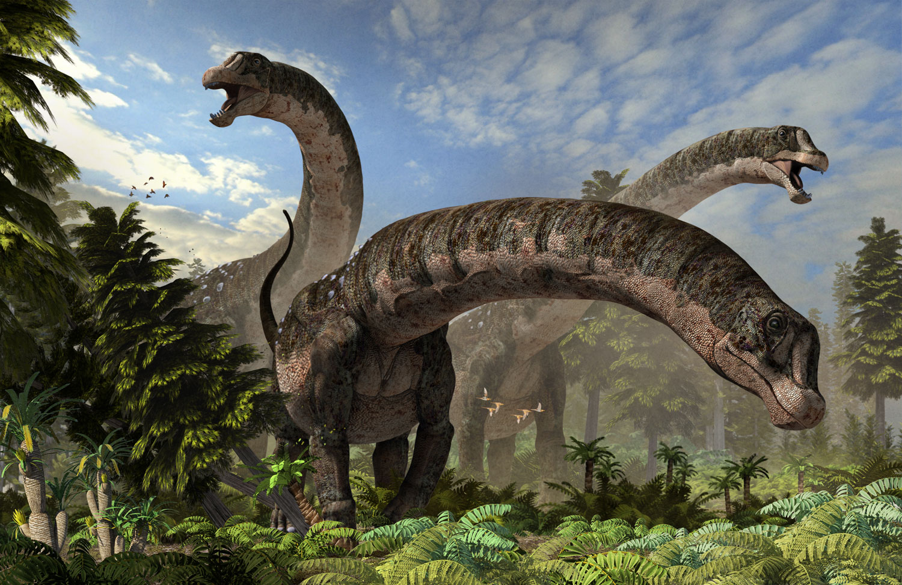
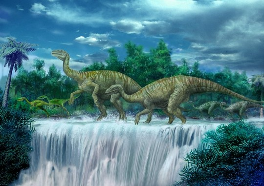
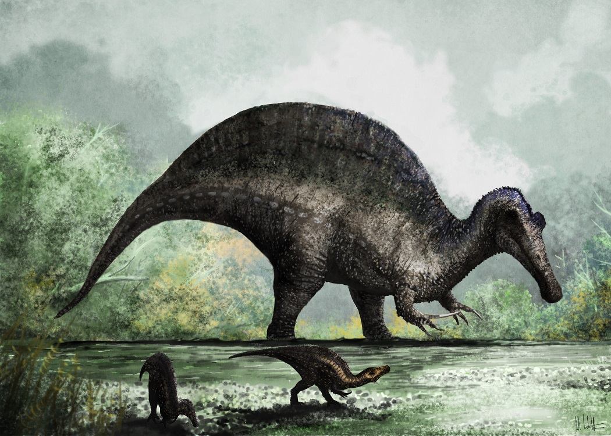

Length: 26m Diet: Herbivorous Found in: Agentinia Lived: Late Cretaceous Period, 100-66 million years ago
Dreadnoughtus is one of the largest terrestrial vertebrates known, possessing the greatest mass of any land animal that can be calculated with reasonable certainty. It stood 11 metres tall and likely used its 13 - metre neck to reach leaves high up on trees in addition to other vegetation near the ground, reducing the dinosaur’s need to walk much. Kenneth Lacovara discovered the remains in the Cerro Fortaleza Formation in Santa Cruz Province, Patagonia, Argentina in 2005. Due to the large size of the bones and the remote location where they were found, it took his team four austral summers to fully excavate the remains.
Length: 6.0m Diet: Herbivorous Found in: China Lived: Early Jurassic, 200-195 million years ago
Lufengosaurus was probably able to stand and walk on its hind legs as well as on all fours. It was a prosauropod, an early relative of the more massive sauropods. The front legs of Lufengosaurus were shorter than the powerful back legs. The animal walked on all fours, but probably rose on its back legs to feed on tall plants. The hands of Lufengosaurus had a large thumb with a claw, used for getting food and maybe as a weapon. There are many fossils of this dinosaur from the Lufeng basin of Yunnan Province in southwestern China.
Length: 18m Diet: Carnivorous Found in: Egypt, Morocco Lived: Late Cretaceous, 95-70 million years ago
Spinosaurus, was named for its “sail-back” feature, created by tall vertebral spines. It was named by German paleontologist Ernst Stromer in 1915 on the basis of the discovery of a partial skeleton from Bahariya Oasis in western Egypt by his assistant. These fossils were destroyed in April 1944 by a British aircraft during WWII. For several decades Spinosaurus was known only from Stromer’s monographic descriptions; however, additional fragmentary remains were discovered during the 1990s and 2000s in Algeria, Morocco, and Tunisia.
